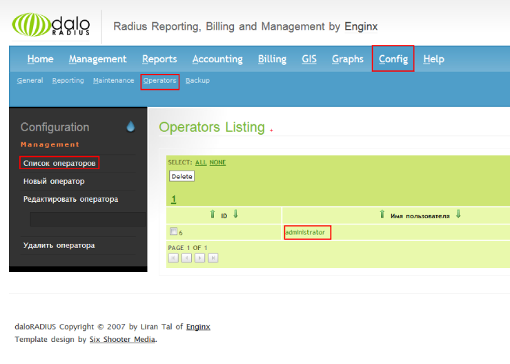

Установка и настройка Radius сервера на Ubuntu с веб интерфейсом.
В данной статье будет рассмотрено как установить Radius сервер FreeRadius с веб интерфейсом Daloradius
Перед установкой обновите все пакеты в системе
apt-get update
apt-get upgrade
Установим Apache2 и PHP
apt-get install apache2
apt-get install php5 libapache2-mod-php5 php5-mysql php5-gd php-pear php-db
Модули php5-gd php-pear php-db необходимы для работы веб интерфейса Daloradius
Устанавливаем Mysql сервер
apt-get install mysql-server
Устанавливаем FreeRadius
apt-get install freeradius
Подключаемся к серверу Mysql
#mysql -u root -p
Далее создаем базу данных radius
#mysql> create database radius;
Назначим полные права пользователю radius
#mysql> grant all on radius.* to radius@localhost identified by "P@$$w0rd";
Отключаемся от Mysql
#mysql> exit
Устанавливаем пакет freeradius-mysql
apt-get install freeradius-mysql
Импортируем таблицы в базу данных radius
#mysql -u root -p radius < /etc/freeradius/sql/mysql/schema.sql
#mysql -u root -p radius < /etc/freeradius/sql/mysql/nas.sql
Для проверки добавим тестовые значения в таблицу radcheck
#mysql -u root -p
#mysql> use radius;
#mysql> INSERT INTO radcheck (UserName, Attribute, Value) VALUES ('sqltest', 'Password', 'testpwd');
#mysql> exit
(adsbygoogle = window.adsbygoogle || []).push({});
Открываем файл настроек Freeradius для MySQL
Расположение файла — /etc/freeradius/sql.conf
Редактируем строки до такого вида:
database = mysql login = radius password = thepassword readclients = yes
Далее открываем файл сайта Freeradius
Расположение файла — /etc/freeradius/sites-enabled/default
Приводим следующие строки к виду:
Uncomment sql on authorize{}
# See “Authorization Queries” in sql.conf
sql
...
Uncomment sql on accounting{}
# See “Accounting queries” in sql.conf
sql
...
Uncomment sql on session{}
# See “Simultaneous Use Checking Queries” in sql.conf
sql
...
Uncomment sql on post-auth{}
# See “Authentication Logging Queries” in sql.conf
sql
...
(adsbygoogle = window.adsbygoogle || []).push({});
Далее правим основной конфигурационный файл Freeradius и включаем поддержку Mysql
Расположение файла — /etc/freeradius/radiusd.conf
#Uncomment #$INCLUDE sql.conf $INCLUDE sql.conf
Теперь протестируем настройки сервера.
Откройте 2 ssh окна терминала.
В первом окне остановим сервис Freeradius
service freeradius stop
И запустим сервис в режиме debug
freeradius -X - debug mode
Теперь открываем второе окно терминала и вводим запрос
radtest sqltest testpwd localhost 18128 testing123
Если вывод команды такой:
Sending Access-Request of id 68 to 127.0.0.1 port 1812 User-Name = "sqltest" User-Password = "testpwd" NAS-IP-Address = 127.0.1.1 NAS-Port = 18128 rad_recv: Access-Accept packet from host 127.0.0.1 port 1812, id=68, length=20
То все впорядке.
Теперь нужно добавить Radius клиентов в файл /etc/freeradius/clients.conf
Пример добавления:
client 192.168.1.0/16 {
secret = secretpass
shortname = testclient
nastype= testdevice
}
Установим веб интерфейс DaloRadius
Скачиваем последнюю версию ПО
wget http://downloads.sourceforge.net/project/daloradius/daloradius/daloradius0.9-9/daloradius-0.9-9.tar.gz
Распаковываем в текущий каталог
tar xvfz daloradius-0.9-9.tar.gz
Переносим в папку /var/www/
mv daloradius-0.9-9 /var/www/daloradius
Импортируем таблицы в базу данных radius
cd /var/www/daloradius/contrib/db
mysql -u root -p radius < mysql-daloradius.sql
Далее правим конфиг веб интерфейса
Расположение файла — /var/www/daloradius/library/daloradius.conf.php
Редактируем строку $configValues[‘CONFIG_DB_PASS’] = »;
В нее вводим наш пароль к БД
Должно получится так :
$configValues['CONFIG_DB_PASS'] = 'Пароль от root к Mysql';
Если хотите использователь пользователя отличного от root измените строку
$configValues['CONFIG_DB_USER'] = 'root';
Теперь веб интерфейс доступен по адресу http://serveraddress/daloradius
Если вместо веб интерфейса вы видите ошибку 404, откройте файл /etc/apache2/sites-available/000-default.conf
измените строку DocumentRoot /var/www/html на DocumentRoot /var/www
Стандартные логин и пароль к daloradius:
Логин — Administrator
Пароль — radius
Данные о пользователе можно изменить через меню интерфейса, как это сделать показано на скриншоте:

Комментарии